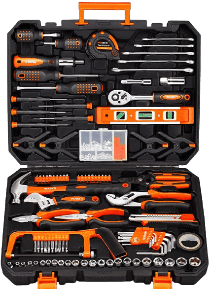

217-Piece Household Tool Kit
A man in the house must have a set of toolkit to show his masculinity.
How about this one? Your wife would love you deep.

- 217 pieces basic tool set for household repair and car repair
-
Forged from high-quality steel and finished in high-polish
chrome,strength, durability, anti-corrosion protection
-
Includes long handle claw hammer, long nose plier, lineman plier,
adjustable wrench, adjustable water pump plier and 10-feet tape measure
for household repair project.
-
Screw driver set includes 2-piece short and 2-piece long flat/phillips
head screwdrivers and 5-piece precision screwdrivers.
-
Auto repair tool set includes 6-piece wrench, quick release ratchet
22-piece drive sockets and socket adaptor
-
All the tools are packed in a rugged, compact carrying case for storage
and portability. Each tool fits snugly into its respective place to
prevent moving around and scraping.
-
The orange buttons on the box are marked with open directions. Please
open the tool box in the right direction to make sure all sockets are in
place when the box is opened
Price:
£ 69.99 FREE delivery Saturday, January 22